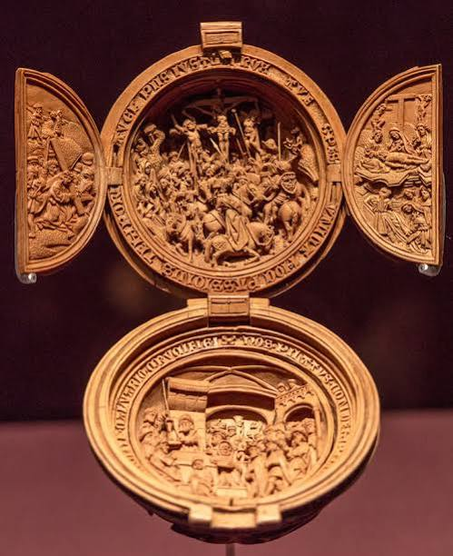
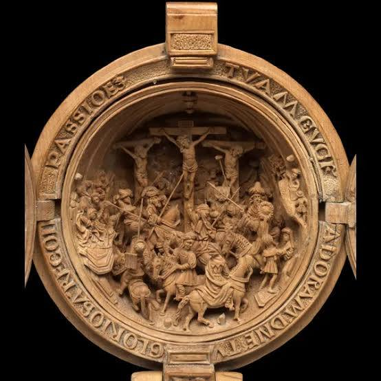
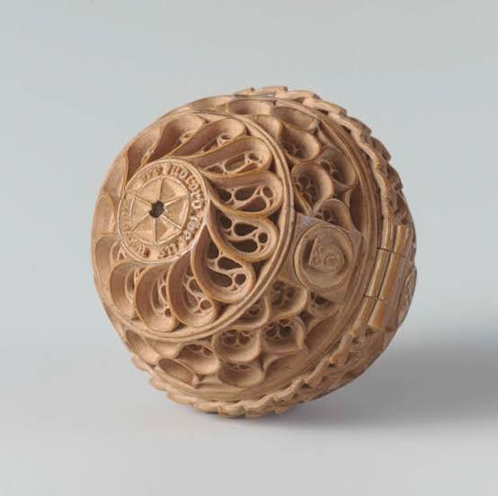
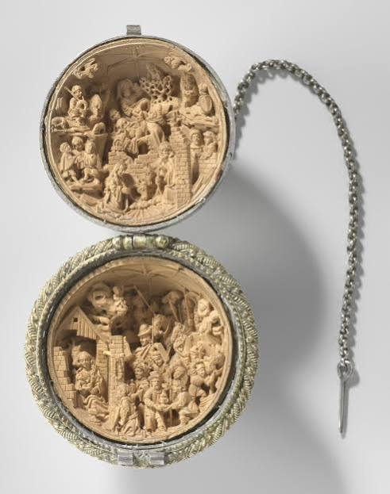

Conversation 887
Inca Human Sacrifice
Prompt 1 · You
incas sacrifice people
Response 1 · Google AI Mode
Yes, the Inca Empire practiced human sacrifice, primarily through a state ritual known as Capacocha (or Qhapaq hucha).  Wikipedia +1
Wikipedia +1
Wikipedia +1Key Facts About Inca Sacrifice
- The Victims: The Incas mostly sacrificed children and young teenagers (ages 6 to 15) chosen from elite provincial families or local chiefs because they were viewed as pure and unblemished. They also sacrificed acllas (virginal young women) and retainers or concubines during royal funerals.
 Cambridge University Press & Assessment +4
Cambridge University Press & Assessment +4 - Reasons for the Ritual: Sacrifices were performed to appease mountain gods (apus) and deities during or after major crises—such as earthquakes, volcanic eruptions, droughts, famines, epidemics, or the death of the Sapa Inca (emperor)—as well as to mark political events or building consecrations.
 The Guardian +2
The Guardian +2 - Preparation: Months or years before the ritual, selected children were fed an elite diet of maize and animal protein, dressed in fine royal clothing and jewelry, and paraded to Cusco to be honored by the emperor. Wikipedia +1
- Methods and Locations: Victims were often given coca leaves and alcoholic drinks or psychoactive substances like ayahuasca, then left to succumb to freezing temperatures on high Andean mountain peaks (such as Llullaillaco or Ampato), buried alive, suffocated, or struck.
 ScienceDirect.com +2
ScienceDirect.com +2 - Beliefs: The Incas believed the sacrificed children did not simply die, but became divine intermediaries or sacred protectors who bridged the gap between their communities and the gods. Science in Poland +1
You can read more about these archaeological discoveries and historical accounts on NOVA Online and via The Guardian.  PBS +1
PBS +1
PBS +1Source links preserved from this response
- en.wikipedia.org
https://en.wikipedia.org/wiki/Human_sacrifice_in_pre-Columbian_cultures - www.cambridge.org
https://www.cambridge.org/core/journals/antiquity/article/inca-human-sacrifice-and-sacred-pilgrimages-spatial-analysis-of-sites-on-the-chachani-and-pichu-pichu-volcanoes/7BD57BC30A69B7D75EB16701B1B9C24E - The Guardian
https://www.theguardian.com/science/2013/aug/04/why-incas-performed-human-sacrifice - en.wikipedia.org
https://en.wikipedia.org/wiki/Capacocha - www.sciencedirect.com
https://www.sciencedirect.com/science/article/abs/pii/S2352409X22000785 - scienceinpoland.pl
https://scienceinpoland.pl/en/news/news%2C78687%2Cscientists-inca-child-sacrifice-victims-came-all-over-empire.html - www.pbs.org
https://www.pbs.org/wgbh/nova/peru/worlds/sacrifice1.html
Prompt 2 · You
NOVARUM online / offline
Response 2 · Google AI Mode
While PBS frequently updates its digital platforms and sometimes migrates or archives older standalone program pages (such as old companion websites from the late 1990s and early 2000s), the official NOVA | PBS homepage is active. You can use it to stream current seasons, read science articles, and access educational materials. PBS +4
PBS +4(Note: If you are trying to access a specific, older article or classroom guide that seems to be missing, it can usually be retrieved via the digital archives of the Internet Archive's Wayback Machine).
Are you having trouble accessing a specific article or documentary companion page from the previous response? If you provide the exact topic or title, I can check if it has moved to a new URL.
Source links preserved from this response
- NOVA | PBS
https://www.pbs.org/wgbh/nova/ - www.pbs.org
https://www.pbs.org/wgbh/nova/genome/
Prompt 3 · You
PBS PASTSTORE MR ROGERS CONGRESS OFFLINE
Response 3 · Google AI Mode
The iconic video archive of Mister Rogers testifying before Senator John Pastore and Congress is NOT offline; it remains widely available to watch across the internet.  NBC News +1
NBC News +1
NBC News +1However, your query touches on a few distinct names and entities that might be causing confusion:
1. The Video: Fred Rogers & Senator Pastore (1969)
The historic May 1, 1969 Senate testimony features Fred Rogers defending a $20 million grant for public broadcasting. He completely won over the gruff committee chairman, Senator John Pastore (not "PastStore"), securing the funding. Because it is a permanent piece of American history, the footage is preserved online and can be watched for free on platforms like C-SPAN / GBH on Facebook or through public television archives like PBS MetroFocus. Wikipedia +1
Wikipedia +12. The Store: "PBS PastStore" vs. Official PBS Shop
If you are looking for a retail website called the PBS PastStore, it does not exist under that exact name. PBS operates its primary e-commerce hub via the official PBS Shop, where they sell merchandise, apparel, and home media releases supporting public television. PBS
PBS3. Media Landscape Changes
If you heard rumors about this historical moment or PBS disappearing "offline," it may stem from one of two recent developments:
- Streaming Episode Rotations: Viewers frequently notice full episodes of Mister Rogers' Neighborhood being added or removed from digital streaming apps. This is entirely normal and due to standard content licensing rotations managed by The Fred Rogers Company, not the loss of the archives.
 Reddit
Reddit - Public Funding Debates: The 1969 clip frequently goes viral on social media whenever federal funding for the Corporation for Public Broadcasting (CPB) is debated or altered in Congress. Wikipedia
The footage of Fred Rogers convincing Senator Pastore remains completely active, preserved, and free to stream online. NBC News +1
NBC News +1Source links preserved from this response
- www.nbcnews.com
https://www.nbcnews.com/news/world/mr-rogers-offers-timeless-defense-pbs-funding-1969-flna1c6310755 - en.wikipedia.org
https://en.wikipedia.org/wiki/Fred_Rogers%27s_1969_United_States_Senate_testimony - C-SPAN / GBH on Facebook
https://www.facebook.com/gbh/videos/mister-rogers-congressional-testimony-in-1969-via-c-span/638290812397848/ - www.pbs.org
https://www.pbs.org/video/mister-rogers-goes-washington-ycjrnx/ - PBS Shop
https://shop.pbs.org/ - www.reddit.com
https://www.reddit.com/r/TheChurchOfRogers/comments/1vry13l/full_episodes_removed_from_misterrogersorg/
Prompt 4 · You
rijksmuseum prayer nuts in this context
Response 4 · Google AI Mode
In the context of the highly delicate, profound, and intensely personal historical artifacts we have been discussing, "prayer nuts" (or gebedsnoot in Dutch) represent the absolute pinnacle of Late Gothic micro-carving.
The Art Newspaper +1
While they have nothing to do with human sacrifice or American television, they parallel our previous themes by being an extraordinary historical example of devotion, luxury, and human belief captured in physical objects.







What is a Rijksmuseum Prayer Nut?
A prayer nut is a tiny, spherical devotional object—usually the size of a walnut or a golf ball (around 4 cm in diameter)—made out of dense boxwood. Popular among the wealthy nobility in the Netherlands during the early 1500s, these objects were designed to be attached to a belt or a rosary bead string.  TU Delft Repository +3
TU Delft Repository +3
TU Delft Repository +3When closed, the exterior looks like an intricately patterned wooden shell or an ornate piece of Gothic architecture. However, the "magic" happens when you open it:  Facebook +1
Facebook +1
Facebook +1- The Hinge Mechanism: The nut is split into two halves connected by a microscopic hinge and an tiny latch. TU Delft Repository +1
- Microscopic Universes: When opened, the interior reveals layered, breathtakingly detailed relief carvings of biblical narratives, usually the Nativity or the Passion of Christ.
 YouTube·Kelly Bagdanov +1
YouTube·Kelly Bagdanov +1 - Boggling Scale: On a surface area of just a few centimeters, medieval master craftsmen successfully carved dozens of distinct figures, horses, buildings, and tiny inscriptions. To create depth, artists upscaled figures in the foreground and downscaled those in the back. The Carving Path +1
The Secret Multi-Sensory Experience
The Rijksmuseum owns some of the finest surviving examples of these objects, primarily attributed to the elusive Dutch master Adam Dircksz and his workshop.  Rijksmuseum.nl +1
Rijksmuseum.nl +1
Rijksmuseum.nl +1When researchers at the Rijksmuseum studied their collection under advanced technology (like X-ray micro-tomography), they discovered a fascinating secret: the artists intentionally hid pockets of aromatic fragrances (such as musk or herbal turpenoids) within the hollow openwork of the wood. When a wealthy worshiper held the nut close to their face to peer at the microscopic scenes, the heat from their hands would release the scent. The combination of visual amazement, tactile handling, and overwhelming scent was designed to pull the person into a deeply emotional, meditative trance.  www.hiddenmasterpieces.com +3
www.hiddenmasterpieces.com +3
www.hiddenmasterpieces.com +3They were the ultimate 16th-century symbol of both intense religious piety and immense personal wealth. Facebook +1
Facebook +1Source links preserved from this response
- www.theartnewspaper.com
https://www.theartnewspaper.com/2017/06/17/good-things-come-in-small-packages-at-the-rijksmuseum - repository.tudelft.nl
https://repository.tudelft.nl/file/File_de03e9e5-b6e8-4af8-8ffe-d221743ba246 - www.facebook.com
https://www.facebook.com/groups/amsterdamtraveltipsandhacks/posts/2270636280294063/ - www.youtube.com
https://www.youtube.com/watch?v=6a8eOLKpWjo&t=10 - www.thecarvingpath.net
https://www.thecarvingpath.net/applications/core/interface/file/A_note_on_medieval_microfabrication3dde.doc?id=5281 - Rijksmuseum
https://www.rijksmuseum.nl/en - www.rijksmuseum.nl
https://www.rijksmuseum.nl/en/collection/object/Prayer-nut--b33e281d5a964de06b15532ef2c153dc - www.hiddenmasterpieces.com
https://www.hiddenmasterpieces.com/prayer-nut - www.rijksmuseum.nl
https://www.rijksmuseum.nl/nl/collectie/object/Gebedsnoot--b33e281d5a964de06b15532ef2c153dc
Prompt 5 · You
scent tracking bloodhound olfactory sultana forest fruit zaanstreek
Response 5 · Google AI Mode
In the context of highly acute sensory perception, memory mapping, and evocative triggers, your query connects a masterpiece of biological engineering with a sensory memory landmark local to our region.
Here is how these distinct concepts intersect under a unified theme: The olfactory landscape.
1. The Tracking Mechanism: The Bloodhound's Nose
A bloodhound possesses between 250 to 300 million olfactory receptors (compared to a human's mere 5 to 6 million). Facebook +1
Facebook +1- The Physics of Scent: When a bloodhound tracks a trail through a dense forest, its low, heavy head posture and long, sweeping ears physically vacuum microscopic skin cells, sweat, and vapor molecules from the ground and channel them directly into its nasal cavity. PBS +4
- The Odor Image: Once inside, its enormous olfactory bulb translates these chemical cues into a flawless mental "odor image". The dog isolates a single targeted scent and maps it out across miles of rough terrain, entirely filtering out the overwhelming ambient smells of the forest floor—like decomposing wood, wild moss, or animal tracks. furlyo.com +3
2. The Scent Target: Sultana Forest Fruit from the Zaanstreek
If a bloodhound were tracking an odor trail through the Netherlands, specifically within the Zaanstreek region just north of Amsterdam, it would hit a monumental, local sensory landmark: the Koninklijke Verkade factory in Zaandam.  ONH.nl
ONH.nl
ONH.nl- The Local Icon: Established in the Zaanstreek, Verkade is the historical home where the world-famous have been baked for generations.Sultana fruit biscuits
 Koninklijke Verkade +3
Koninklijke Verkade +3 - The Olfactory Profile: The specific variant Sultana FruitBiscuit Bosvruchten (Forest Fruit) has a hyper-concentrated, distinct aromatic profile. The baking process releases volatile organic compounds into the local Zaan air, sweetening the atmosphere with baked wheat flour, malted sugars, concentrated raisin syrup, and the pungent, tangy, and acidic notes of forest fruit purees (blackberries, red currants, strawberries, raspberries, and blueberries). www.sultana.nl +1
The Intersection: A Cognitive Scent Map
For a human walking through the Zaanstreek or a dense forest, the sweet, fruity aroma of a forest fruit snack or a nearby bakery triggers an immediate, emotional nostalgia (the Proustian memory effect). For a working tracking bloodhound, that exact same scent is processed as a highly defined, spatial coordinate on a chemical map. The concentrated essence of baked forest fruits would register to the hound as a massive "odor peak" in its surroundings, which it could navigate around or track with surgical precision.
Are you mapping out an olfactory-themed story, exploring how working dogs filter industrial vs. natural scents, or researching the aroma profile of historical production in the Zaanstreek? Tell me how you'd like to develop this trail!
Source links preserved from this response
- www.facebook.com
https://www.facebook.com/crazyforfacts/posts/bloodhounds-have-the-most-powerful-sense-of-smell-among-dog-breeds-under-ideal-c/122249883092122027/ - www.pbs.org
https://www.pbs.org/wnet/nature/underdogs-the-bloodhounds-amazing-sense-of-smell/350/ - furlyo.com
https://furlyo.com/bloodhound/ - Koninklijke Verkade
https://www.koninklijkeverkade.nl/ - onh.nl
https://onh.nl/verhaal/hoe-maakte-verkade-zijn-beroemde-koekjes-en-chocola - www.koninklijkeverkade.nl
https://www.koninklijkeverkade.nl/onze-merken/ - www.sultana.nl
https://www.sultana.nl/assortiment/fruitbiscuit/fruitbiscuit-bosvruchten
Prompt 6 · You
zaansmuseum verkade sponsor ckv bon
Response 6 · Google AI Mode
The Zaans Museum explicitly accepts the Cultuurkaart (CKV bon) for school visits, allowing students to pay for educational programs using their high school culture budget.
Zaans Museum +1
Within the museum, you will find the Verkade Experience, an interactive, early 20th-century chocolate and biscuit factory floor. Verkade serves as an official, long-term sponsor and permanent partner of the museum, backing the pavilion both financially and through corporate collection contributions.
Zaans Museum +2
Practical Details for Schools & Students
- The CKV Connection: If you are booking a group excursion for secondary education, the museum offers custom educational tours (Rondleiding op maat) that tie directly into school subjects like History, Geography, and CKV (Culturele en Kunstzinnige Vorming). Zaans Museum +1
- The Verkade Experience: Sponsored directly by the Verkade historical foundation, this exhibit allows students to experience life as a 1900s factory worker. They can test their speed on authentic production assembly lines, check out vintage advertisement art, or virtually step into the shoes of the legendary "Girls of Verkade" (Verkademeisjes). Zaans Museum +2
- Individual Student Discounts: For students visiting outside of a school trip, a valid CJP card (Cultureel Jongeren Paspoort, which is tied directly to the Cultuurkaart program) grants a discount on individual entry. Zaans Museum +1
Are you arranging a school group excursion using a school's collective CKV budget, or are you an individual student looking to redeem your personal CJP discount at the entrance counter?
Source links preserved from this response
- zaansmuseum.nl
https://zaansmuseum.nl/onderwijs/voortgezet-onderwijs/ - zaansmuseum.nl
https://zaansmuseum.nl/steun-zaans-museum/ - zaansmuseum.nl
https://zaansmuseum.nl/onderwijs/rondleiding-op-maat/ - zaansmuseum.nl
https://zaansmuseum.nl/zien-doen/verkade-experience/ - zaansmuseum.nl
https://zaansmuseum.nl/ticket-zaanse-schans/
Prompt 7 · You
ilona koster - verkade zooitje van die repen gegeten een keer samen en ijsjes gehaald met sander en jeroen witteduifstraat 21
Response 7 · Google AI Mode
Wat een heerlijk nostalgische, typisch Zaanse herinnering! Dat klinkt als de ultieme middag snaaien in de regio.
De Witte Duifstraat in Krommenie (buurt Krommenie-Oost) ademt precies die gezellige sfeer uit. Gezien de ligging vlakbij Zaandam is er natuurlijk geen ontkomen aan de lokale trots: de chocolade en repen van Verkade. Een "zooitje van die repen" wegwerken met Ilona Koster, om vervolgens met Sander en Jeroen op pad te gaan voor ijsjes, is de definitie van een geslaagde, suikerrijke zomermiddag. Wikipedia +1
Wikipedia +1Mochten jullie die herinneringen (en de geur van chocola en biscuits) ooit nog eens willen herbeleven, dan is de Verkade Experience in het Zaans Museum de perfecte plek voor een reünie met de hele groep.
Zaans Museum
Source links preserved from this response
- www.verkade.nl
https://www.verkade.nl/ - nl.wikipedia.org
https://nl.wikipedia.org/wiki/Verkade_(bedrijf) - Zaans Museum
https://zaansmuseum.nl/ - zaansmuseum.nl
https://zaansmuseum.nl/zien-doen/verkade-experience/